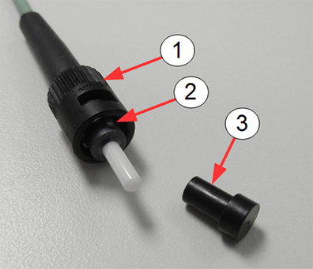
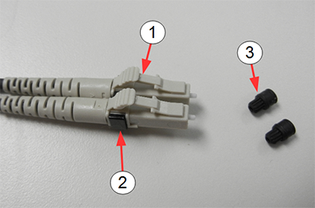
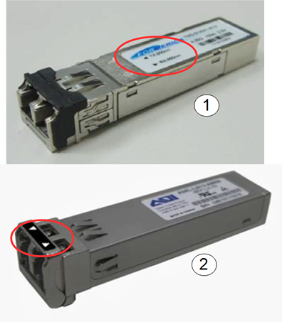
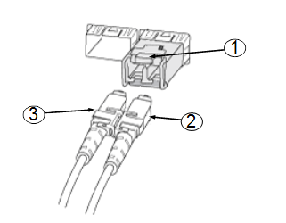
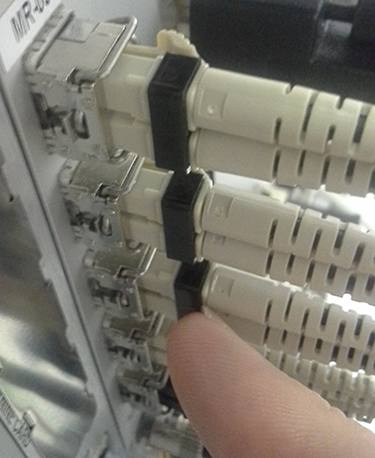

- 00000018WIA309A5130GYZ
- id_119040621.6
- Jul 5, 2019, 1:15:10 PM
Fiber Optic Devices Installation and Replacement
Prerequisites
| Required persons | Preliminary requirements | Procedure | Finalization |
|---|---|---|---|
| 1 | - | As required | - |
| Item | Quantity | Effectivity | Part number | Manufacturer |
|---|---|---|---|---|
| Fluke Optics Cleaning Kit | 1 | - |
5478006 | - |
| ||||||||||||||||
About this task
Overview
Fiber optic cables can easily be damaged if they are improperly handled during installation or during the replacement of connectors. Proper cleaning is required because microscopic contamination in the fiber connection will cause intermittent signals, due to degraded signal power, resulting in failure of the component or failure of the whole system.
This procedure describes the types of fiber optic devices used in MR and how to properly handle and clean both the fiber optic cable ends and the ferrules on the connectors.
Two types of connectors are used:
-
ST bayonet connectors used for the 80 MHz clock
Figure 1. ST Bayonet Connector 
Item Description 1 Bayonet connector assembly 2 Alignment pin 3 Protective caps for ferrules -
LC connectors used with SFP fiber optic transceiver
Figure 2. LC Connector 
Item Description 1 LC connectors 2 Black clip 3 Protective caps for ferrules
The LC connector is used with the SFP (small form-factor pluggable) optical transceiver. The SFP is a compact fiber optic transceiver used by multiple subsystems in an MR system for the transmission of data. These devices can transmit high rates of data without the concern of noise being induced in the fiber optic cables which join these devices.
The SFP is very sensitive to electrostatic discharge. When handling any of these devices, use proper ESD procedures to prevent early failure.

| Item | Description |
|---|---|
| 1 | Formerica SFP with Tx and Rx arrows on label |
| 2 | Applied Optoelectronics SFP with Tx and Rx arrows on bail |
Bend Radius of Fiber Optic Cable
About this task
Avoid twisting, squeezing, pinching, or bending the fiber optic cable beyond the specification for fiber optic cable. Sometimes damage does not manifest itself until much later. Even minor damage (not visible damage) can result in dB signal loss due to scattering and refraction of the light through the cable. Fiber optic cable needs a clear path for transmission of high speed data. See DOC1465935 in the online documentation library for the maximum bending radii of both riser/plenum cables and simplex/duplex fiber optic cables.
-
Avoid letting the fiber optics hang, causing a sharp bend in the cable.
-
Avoid letting anything compress the cable, causing kinks, such as routing the cable under ATE equipment or placing the cable in a position to be pinched or stepped on.
Cleaning Fiber Optic Cables, Connectors, and SFP Optical Transceiver
Procedure
ST Bayonet Connector
About this task
The ST bayonet connector is used on the 80 MHz clock (BNC).
Connect Fiber Optic Cable to ST Bayonet Connector
Procedure
- Remove the protective cap on the ST bayonet connector (if present) (seeFigure 1).
- Clean the end of the fiber optic cable and the ferrule of the ST bayonet connector using the cube and the solvent pen per instructions on the laminated card in the Fluke Fiber Optic Cleaning kit..
- Align the slot on the inner sleeve of the connector with the alignment pin above the ferrule on the cable.
- Gently push the cable into the connector. Do not force.
- Turn the connector clockwise until it locks into place.
Extract Fiber Optic Cable from ST Bayonet Connector
Procedure
- Gently push the cable into the connector and twist the connector counterclockwise until it unlocks. Do not force.
- Gently remove the cable from the bayonet ferrule.
- Insert the protective cap on the connector if the connector is to be left unattended for any length of time.
LC Connector and SFP Transceiver
About this task
Connect LC Connector to SFP Transceiver
Procedure
- Remove the protective caps on the LC connectors (see Figure 2).
- Remove the protective plug from the SFP transceiver.
- Clean the LC connector and SFP transceiver (see Cleaning Fiber Optic Cables, Connectors, and SFP Optical Transceiver).
- Insert the LC into the SFP until it contacts the bottom of the
SFP.
- Grasp the upper exposed plastic LC housing (not rubber boots
on fiber cables) and press down to begin seating the LC into the SFP.
Figure 5. LC Connector and SFP Transceiver 
Item Description 1 SFP transceiver 2 LC connector 3 LC connector - Use your finger nail to press the black clip to finish seating the LC connectors into the SFPx`.
Figure 6. Pressing Black Clip to Lock LC Connector in SFP 
- Grasp the upper exposed plastic LC housing (not rubber boots
on fiber cables) and press down to begin seating the LC into the SFP.
- Confirm that the LC connector is locked in place by gently attempting to pull it out.
Remove LC Connector from SFP Transceiver
Procedure
- While holding down the locking mechanism on the LC connector, gently pull out the LC connector from the SFP transceiver.
- Insert the protective cap on the connector, if the connector is to be left unattended for any length of time.
- Insert the protective plug on the SFP transceiver, if it is to be left unattended for any length of time.
Confirm Good Connections
About this task
Procedure
Finalization
Finalization
No finalization steps.